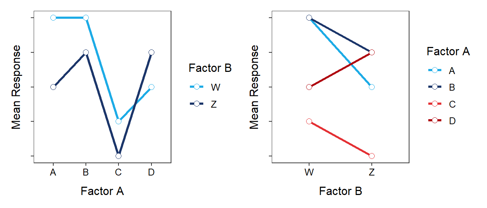

Make sure to keep levels separate … need to say the number for each factor.
The number of replicates is per treatment … thus, divide total available by the number of treatments.
A replicate is an individual or unit of analysis. You should state what that is in this specific case.
The response variable is yield of the product.
The factors are temperature and stirring rates.
There are three levels of temperature and three levels of stirring rates.
There are nine (=3×3) treatments.
There are 4 replicates (=\(\frac{36}{9}\)).
A replicate is a “vessel” in which the product will be heated and stirred.
I would use sample(36) and select the first four numbers for the first treatment, the second four numbers for the second treatment, and so on.
Means Table and Interaction Plot
The interaction plots should look like the following.

Interaction and Main Effects
Note:
Make sure that you comment about each type of effect (interaction, row factor, and column factor) even if that effect is not evident. In other words, explicitly state that there is no effect if there is no effect; don’t just leave that effect absent from your answer.
If there is an interaction effect, do NOT say that there is “no main effects.” Rather say that the “main effects cannot be assessed because of the interaction effect.”
The “lines” do not have to intersect to represent an interaction, they simply do not “track together.” Imagine “lines” that start near the same point but one goes up and the other goes down. They don’t intersect but they certainly don’t track together.
Pay close attention to my descriptions below. Come see me if they do not make sense to you.
There is NO interaction effect because all “lines” “track together.” There is a factor A main effect because all “lines” are not horizontal (implying a difference in factor A level means). There is a factor B main effect because all “lines” are not on top of each other (implying a difference in factor B level means).
There is NO interaction effect because all “lines” “track together.” There is NO factor A main effect because all “lines” are horizontal (implying no difference in factor A level means). There is a factor B main effect because all “lines” are not on top of each other (implying that the factor B level means are not equal).
There IS an interaction effect because the “lines” do not “track together” (in fact they intersect). I will not comment on the main effects because of the presence of the interaction effect.
There is NO interaction effect because all “lines” “track together.” There is a factor A main effect because all “lines” are not horizontal (implying a difference in factor A level means). There is a factor B main effect because all “lines” are not on top of each other (implying a difference in factor B level means).
There is NO interaction effect because all “lines” “track together.” There is a factor A main effect because all “lines” are not horizontal (implying a difference in factor A level means). There is a factor B main effect because all “lines” are not on top of each other (implying a difference in factor B level means).
There IS an interaction effect because the “lines” do not “track together” (in fact they intersect). I will not comment on the main effects because of the presence of the interaction effect.
Means Tables
Table 1 corresponds to Figure 5. It has to be Figure 5 or 6 because those are the only figures with only two levels for Factor A. The means in row “A” and row “B” “track together” implying no interactions as seen in Figure 5.
Table 2 corresponds to Figure 2. Table 2 has the same values in each row for each column, but the columns differ. This implies no interaction effect, a Factor A (“A”, “B”, “C”) effect, but no Factor B (“V”,“W”,“Z”) effect. This corresponds to Figure 2.
Table 3 corresponds to Figure 6. See reasoning for Table 1 (but noting that this table shows an interaction) and noting that all three values for the “B” row are equal.